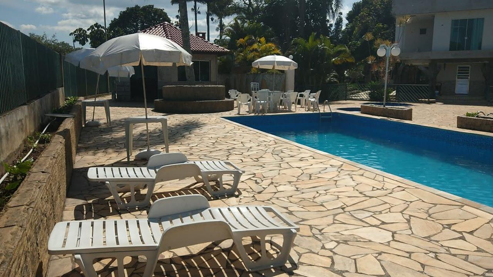
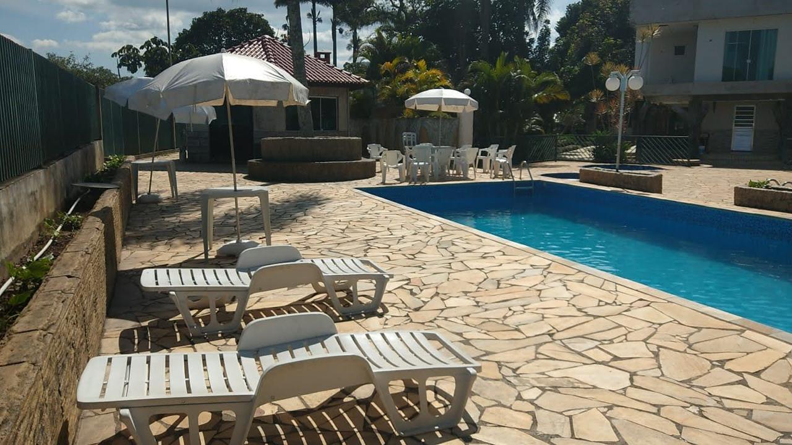
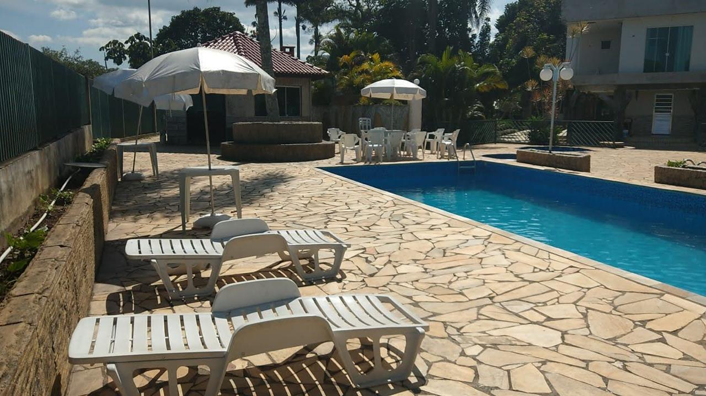

Estrutura
Conheça um pouco mais da clÃnica mais avançada em reabilitação.

 



Reconstruindo Caminhos com Acolhimento e Respeito. Oferecemos apoio especializado e atendimento humanizado para ajudar cada pessoa a recuperar sua autonomia, em um espaço seguro, acolhedor e voltado para o bem-estar integral.
📅 Agende uma visitaNossa equipe desenvolve um atendimento confiável e abrangente para o paciente e sua famÃlia.
⚕ Quero saber mais📹 Monitoramento 24h
🔠Privacidade absoluta
💂 Segurança garantida
🊠Piscina
🛌 Acomodações Confortáveis
📺 TV, Academia, Futebol e muito mais
🽠4 Refeições diárias
♟ Jogos e Atividades
🌳 Contato com a Natureza
👨â€âš• Psiquiatra
👩â€âš• Psicóloga
👩â€âš• Nutricionista
🋠Fisioterapeuta
📖 12 Passos (A.A./N.A.)
🧘 Terapias integradas
ğŸ Arteterapia e Espiritualidade
Individualizado e sigiloso
Atendimento familiar
Acompanhamento contÃnuo
Somos uma equipe dedicada e experiente na captação de pacientes para N.A., atuando com sensibilidade e compromisso tanto na captação voluntária quanto involuntária. Trabalhamos incansavelmente para oferecer acesso à s melhores clÃnicas de tratamento em todo o Brasil, garantindo atendimento humanizado e suporte completo. Nosso objetivo é encontrar o caminho certo para cada pessoa, levando esperança, cuidado e transformação para quem precisa. Estamos prontos para buscar e acompanhar você ou seu familiar nessa jornada rumo à recuperação.
📅 Agende uma visitaConheça um pouco mais da clÃnica mais avançada em reabilitação.


Nas doenças psiquiátricas, existe uma correlação entre gravidade da doença e funcionamento psicossocial. Quanto mais precoce a idade de inÃcio dos sintomas, maior o prejuÃzo no desenvolvimento psicossocial, o que impacta diretamente a trajetória de crescimento educacional, profissional e interpessoal.

O Transtorno por Uso de Substâncias (TUS) tem como caracterÃstica a presença de sintomas cognitivos, comportamentais e fisiológicos indicando o uso contÃnuo da substância, apesar de problemas significativos relacionados a ela.
Estamos disponÃveis 24 horas por dia para atender você e sua famÃlia.
📱 Whatsapp